Before / after
Same URL, viewport and Chromium build; before = frozen baseline/, after = candidate/. Back to the candidate. Hashes: pairs.json.
Batch 1 main series mock: baseline default (older reading room) vs candidate default (rebuilt + TitlePageBar)
review-batches/01-sources-manga/finished-mocks/04-manga-series/manga-series.html · 412×900
Before
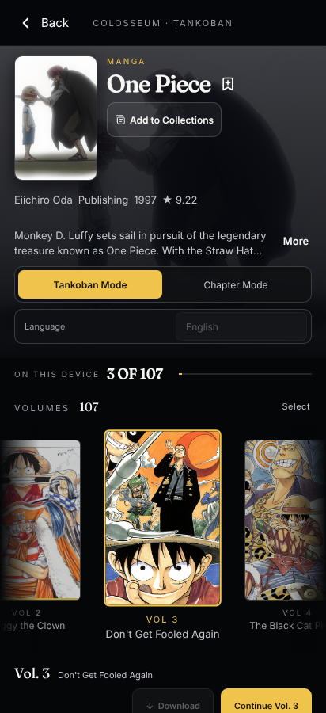
After
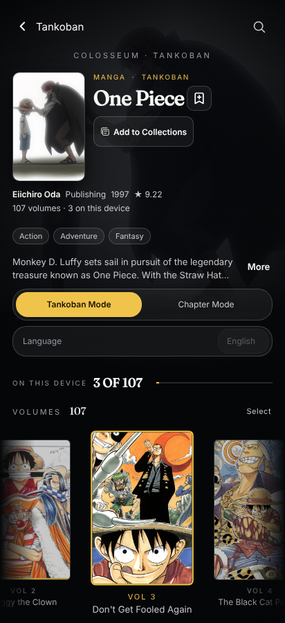
Same, phone landscape
review-batches/01-sources-manga/finished-mocks/04-manga-series/manga-series.html · 900×412
Before
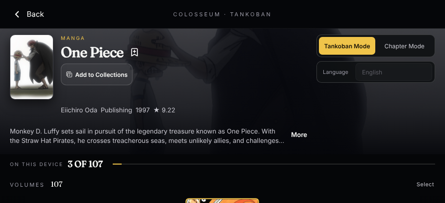
After
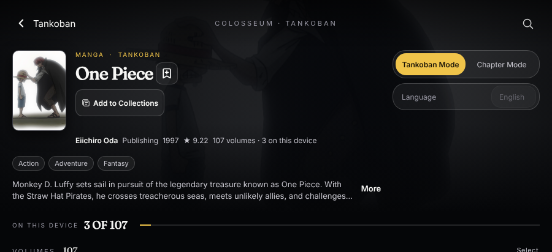
Batch 1 chapters: baseline default vs candidate rebuilt
review-batches/01-sources-manga/finished-mocks/04-manga-series/manga-chapters.html · 412×900
Before
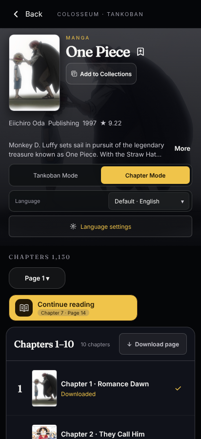
After
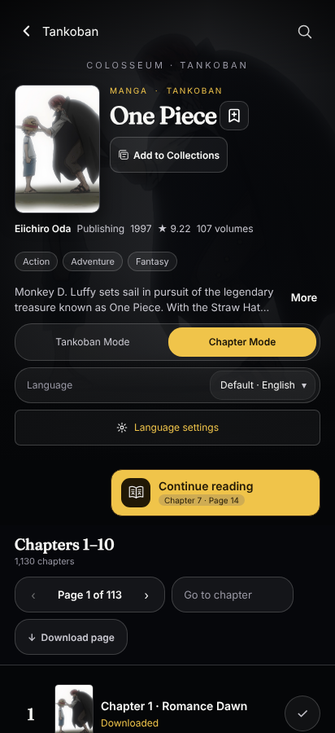
Desktop: window controls retained (baseline icons; candidate one system menu)
review-batches/01-sources-manga/finished-mocks/04-manga-series/manga-series.html · 1280×700
Before
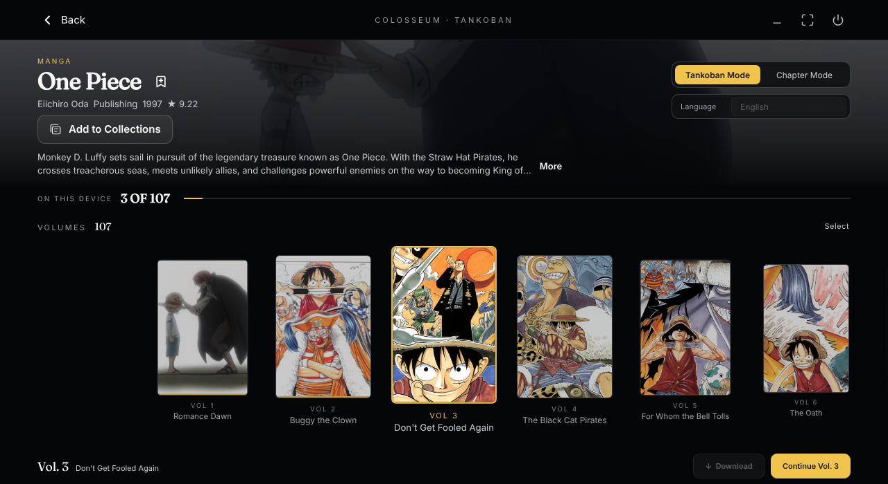
After
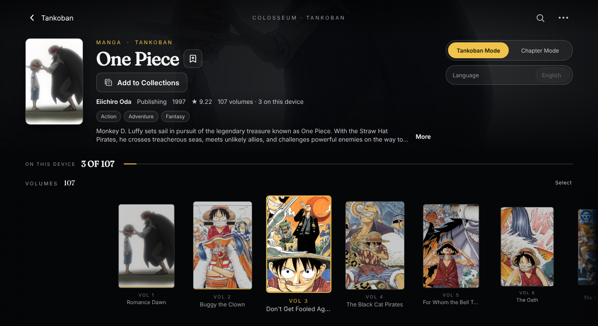
Hemanth-viewed rebuilt preview (older chrome) vs final rebuilt with TitlePageBar
review-batches/01-sources-manga/finished-mocks/04-manga-series/manga-series.html · 412×900
Before
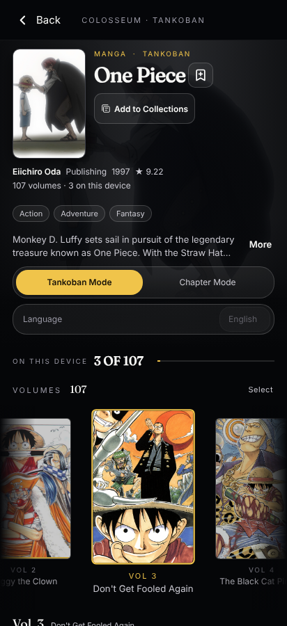
After

Batch 2 Theatre rebuilt on Android phone: Window menu invoker removed (Sol SOL-B2-001)
review-batches/02-detail-pages/finished-mocks/17-theatre-details/film-detail.html · 354×792
Before
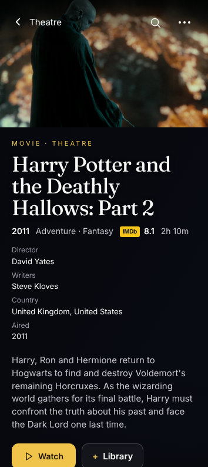
After
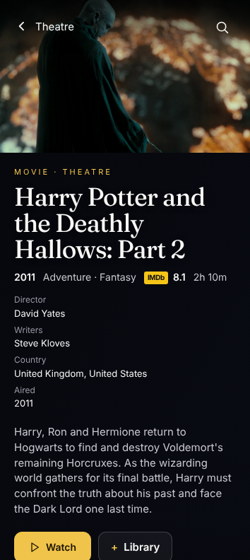
Batch 3 genre index on Android tablet: window controls removed
review-batches/03-browsing-libraries/finished-mocks/20-search-browse/genre-index.html · 1280×800
Before
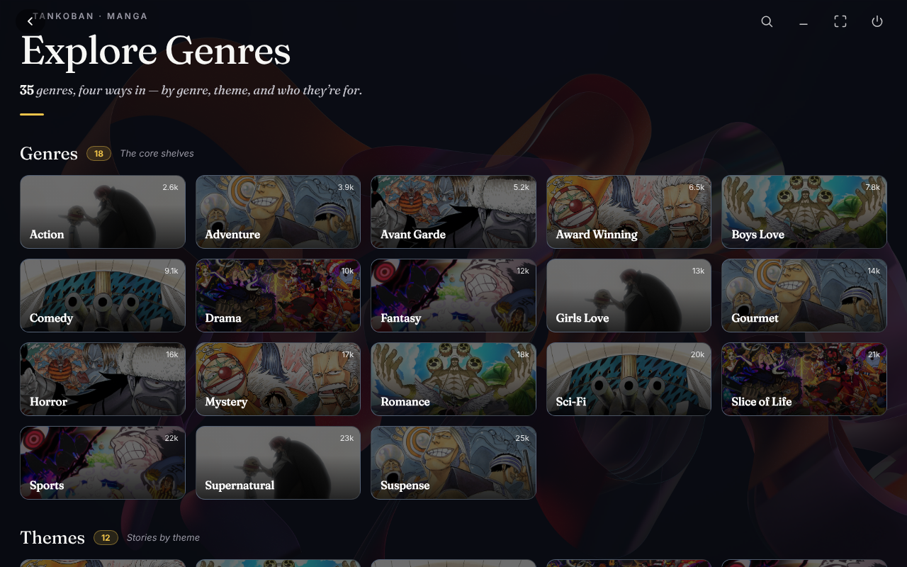
After
Batch 4 account profile on Android tablet: window controls removed
review-batches/04-accounts-configuration/finished-mocks/12-account-forms/account-profile.html · 1280×800
Before
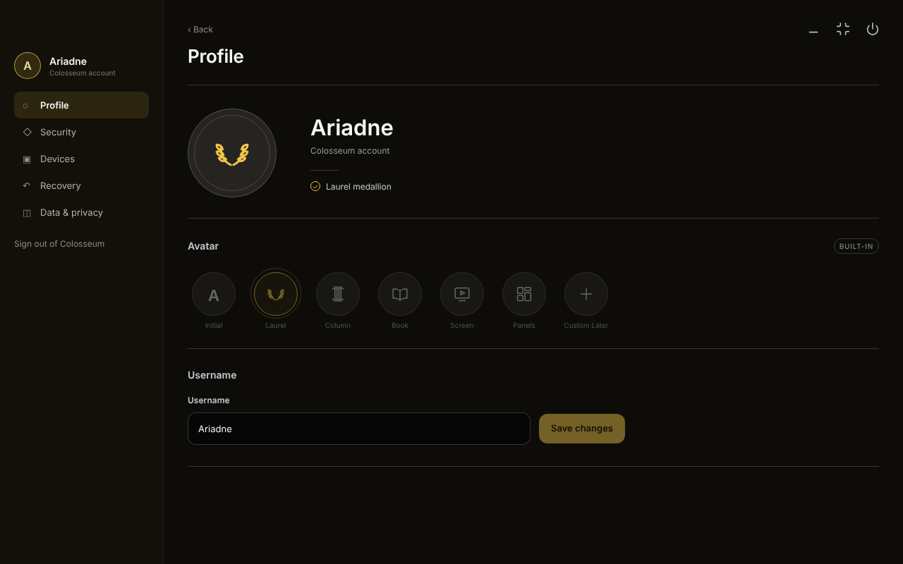
After
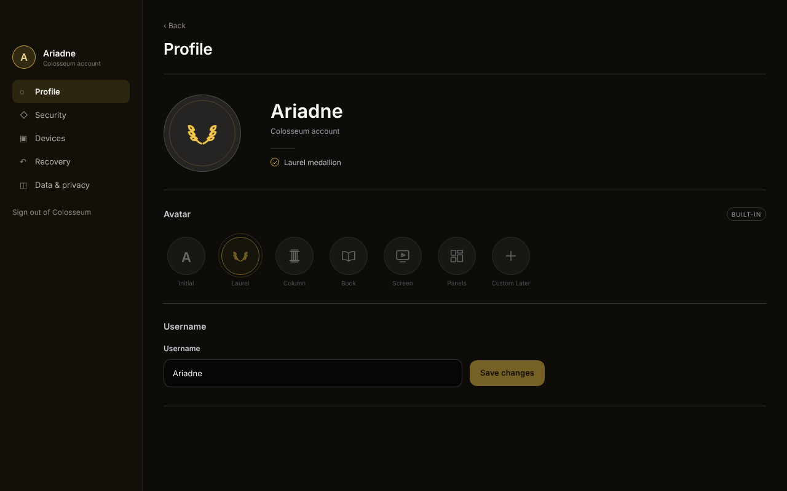
Batch 4 flyout TopBar underlay on Android tablet: window controls removed
review-batches/04-accounts-configuration/finished-mocks/11-account-entry/account-flyout.html · 1280×800
Before
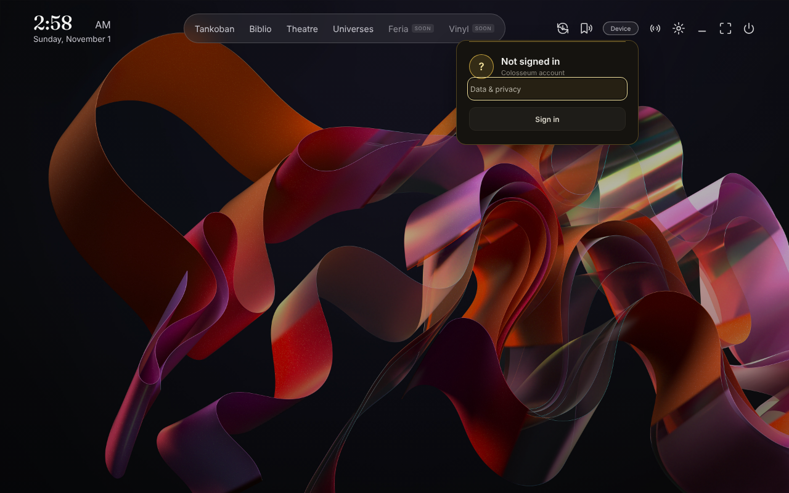
After
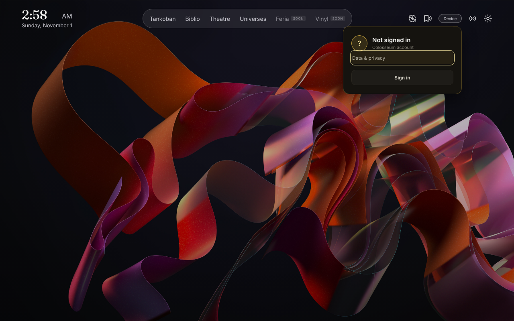
Batch 5 wallpaper search: omitted KDE art restored byte-exact (requires verify/fetch-kde-wallpapers.py)
review-batches/05-tracker-utilities/finished-mocks/wallpaper-search.html · 412×900
Before
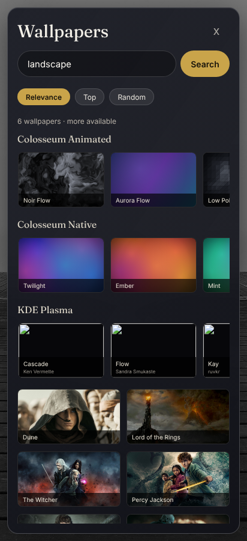
After
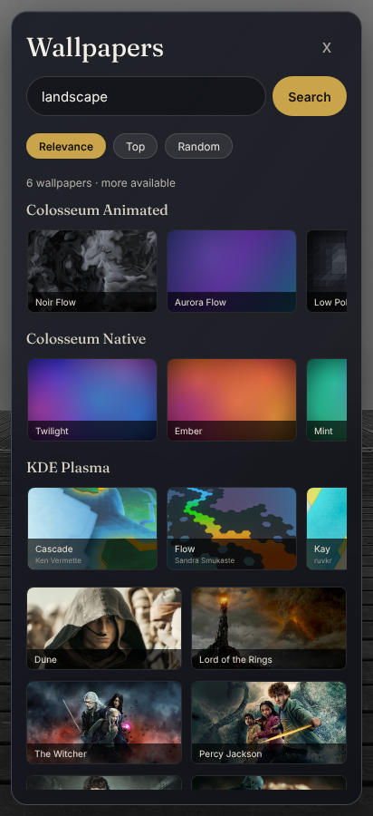
Cover-flow allocation under the selected header (A fit vs B scroll)
See the measured re-evaluation.
phone-portrait 412×900: A book 190px (raw 111) does not fit; B book 203px, scroll 102px
A · source fit
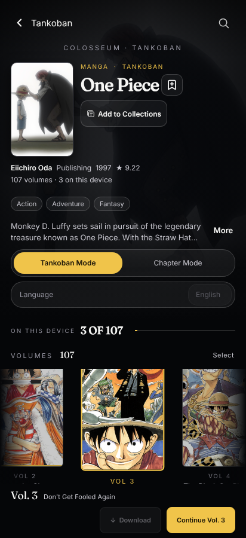
B · page scroll (scrolled to the flow)
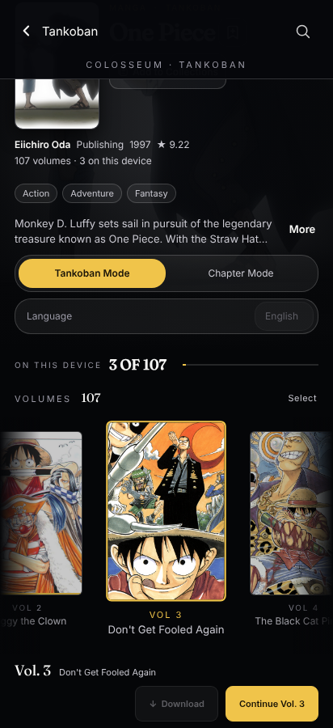
phone-landscape 900×412: A book 190px (raw -64) does not fit; B book 203px, scroll 405px
A · source fit
B · page scroll (scrolled to the flow)
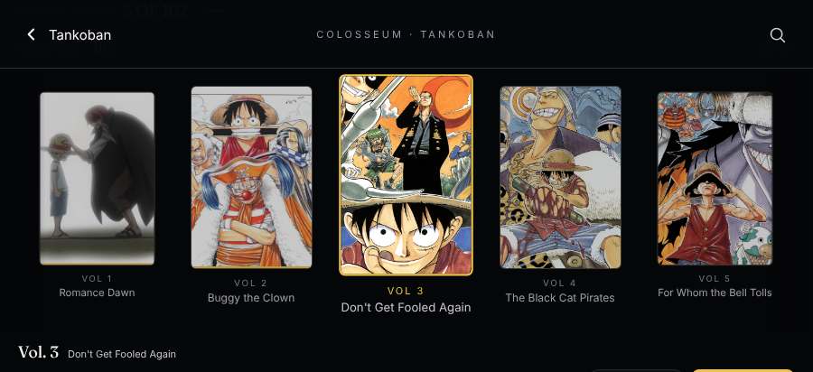
small-landscape 792×354: A book 190px (raw -64) does not fit; B book 203px, scroll 463px
A · source fit
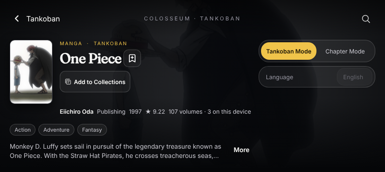
B · page scroll (scrolled to the flow)
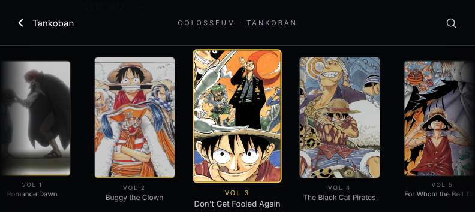
desktop 1280×700: A book 190px (raw 189) fits; B book 190px, scroll 45px
A · source fit

B · page scroll